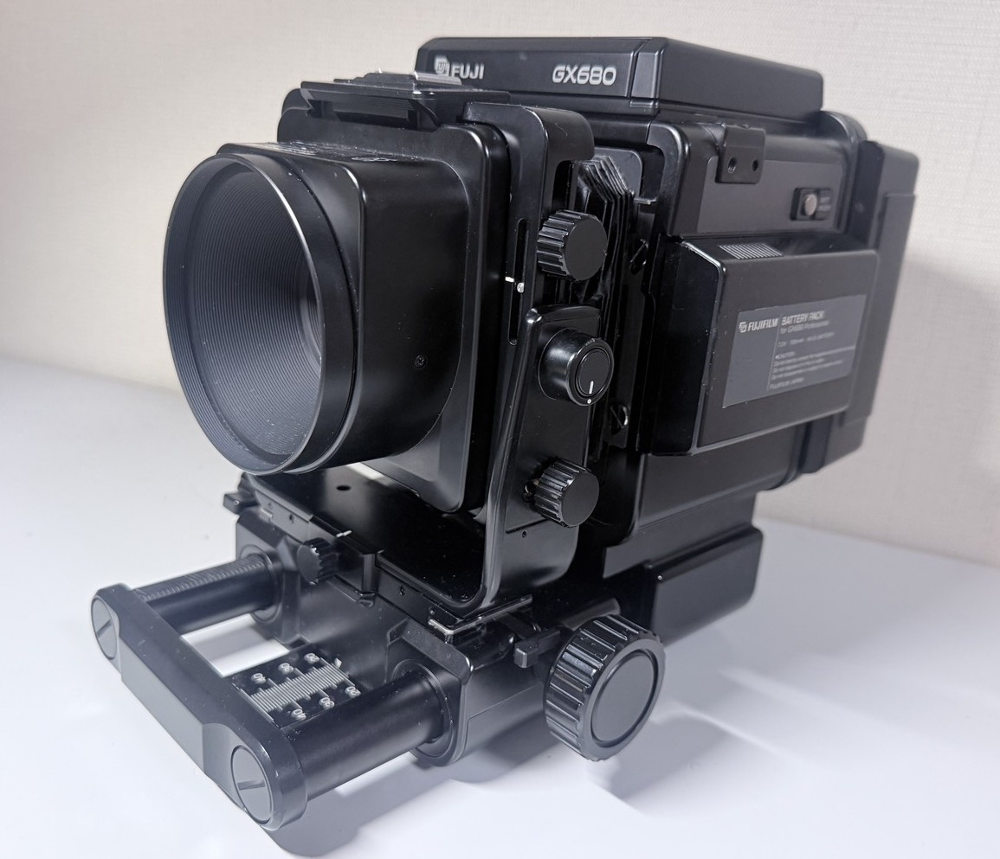
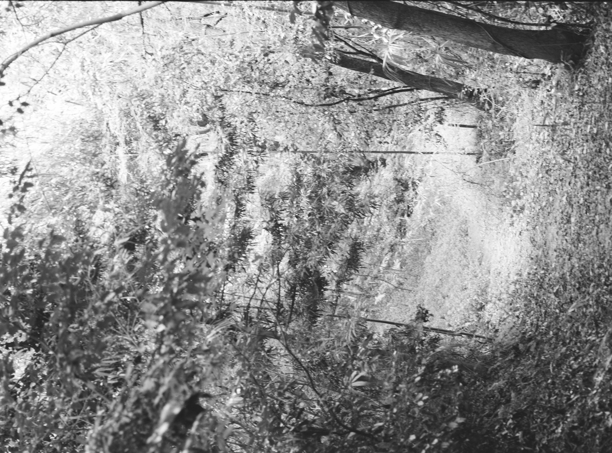

【GX680 Professional（初代型）】
【フジ・浪漫の塊】
基本情報
| メーカー | 【FUJIFILM】 |
|---|---|
| 機種名 | 【FUJIFILM GX680 Professional（初代型）】 |
| 発売年 | 【1986年】 |
| 使用フィルム | 【120フィルム】 |
| 撮影方式 | 【「6×8判・ロールフィルム使用】 |
| レンズマウント | 【独自規格（しいて言うならGXマウント）】 |
| シャッター | 【電子シャッター・400～8s】 |
| 露出 | 【マニュアル露出】 |
外観

かなりゴツゴツしており、メカメカしいカメラです。非常にロマンを感じます。
特徴
このカメラは何というか・・・。
兎に角”メカニカル”って感じのカメラです。ガチャガチャしててシャッターを切らなくても触ってて楽しいです。
ですが試写した所一枚分勝手にまかれたのはマイナス。
まぁフィルムバック側の記憶情報を保持する用のバッテリーが死んでるらしいので、
次撮影する場合はなるべく電源を切らないようにしたい。
（だがバッテリーが長持ちしないのが真の問題なのだが）
スペック等々
測光は”マニュアル測光”。
まぁわかりやすく言うとガイドライン的なものは搭載されてないということです。
ですが一応、シャッターを切った時に＋（過多）ーDNP（正常）ー－（過少）の三段階で
評価はしてくれます。具体的に何段オーバー・アンダーだったとかはありません。
なので測光する時は必然的に外部測光に頼ることになるのがうーむって感じ。
ファインダーは非常にクリア。ファインダーもウエストレベルファインダー。
平たく言うと上から覗くってことです。
このカメラ、プロが使用すること前提なのでいろんなところが交換式なんですよね。
ファインダーに限ればプリズムファインダーに交換可能だったり、
無論レンズも豊富に取り揃えられている。
電源も調べた感じ、外部からの供給に切り替える（＝コンセントから直接取るやつ）
にも変更可能っぽい？。バッテリー自体も単三電池のやつが三代目にはあったりと
初代・二代目・三代目で結構変わります。
私が買ったときは[使用済みバッテリー×１・未使用新品バッテリー×１
120フィルム用のフィルムを巻くやつ×２・リモートレリーズ]などなど色々セットでついてきたのはありがたかった。
公式英語版の説明書曰く蛇腹だったりレールの延長、フィルムホルダーのフィルム規格[120-220]
に変更可能だったりと、とにかく”プロ”が使うものだとわかると思います。
ですが、買うのであれば絶対に”初代（＝これで紹介されてるもの）はお勧めしません。
なぜなら”首に掛けれない”からです。
初代は明確に”三脚使用”が大前提。なので専用アダプター等々アダプターをつけないといけません。
よくある三脚穴を使うのでいいじゃないか、そう思うでしょう。
ですがなるべく軽く組んでも約4kg。重いなんてもんじゃない。
なのでしっかりしたアダプターを買わないと本体が傷ついてしまいます。
なのでアダプター選びはしっかりしましょう。
実際に使ってみて
実際に2026年8/26日に学校の敷地で試写してきました。使用フィルムは「ILFORD DELTA 400」
（モノクロ・ISO400のフィルムです。）

これは縦で撮ったカットです。 まだまだ自分の腕が未熟とは言えしっかり映ってくれてホントありがたかったです。
これは近距離で寄って撮ったカットです。しっかりと時間をかけてバッチリピントを合わせただけあって 綺麗に写っています。 （この時、周りから明らかな興味の目を感じたのはつらかったが）
撮影について
現像が上がってきて、全てが終わった後に感じるのは”撮るのが大変”。 まず撮るときに「ここだ！」となったらしっかり三脚を設置。 上にGX 680を乗っけてピントを調整、何かしらで測光して最終チェックをし、シャッターを切る。 これを120フィルムであれば9回、繰り返さなければならない。 移動～、と軽く言っているが首に掛けられないので両手がふさがった状態での移動・・・。 それなりにストレスを感じる。 だが撮る瞬間などは滅茶苦茶”楽しい”。現像が上がってきて、撮れているのがわかった時なんてもう・・・。 ”恍惚”と言う日本語がここまでピッタリ合うこともないだろう。だからお金がある諸君は是非是非”撮影体験”として 購入してみてほしい。
入手について
私はヤフー”フリマ”でで購入した。 オークションと違って、フリマは定額・変更可なのでこう言った”絶対買いたい”ものならばフリマはお勧め。
金額とか
私の場合は色々セットで七万であった。（フリマは送料ただである。） （無論正直に言いったら両親にド𠮟られたが） 三代目や動作品などだと高くなってしまうがおおよそ十万程度が平均ではないかなってのが肌感覚。
現在の状態
購入前から指摘されていた（私の個体は）フィルムバックのバッテリー寿命が問題。 修理できるのかは不明だができるものならやってみたいものだ。 それ以外の問題は特にない。
まとめ
確かに、このカメラは旅行や気軽に持ち込んで撮影をするようなカメラではない。 だが一人静かに・・とか「ここぞ！」というポイントではその才能を遺憾なく発揮する代物である。 値は張るが是非是非触ってみてほしい。